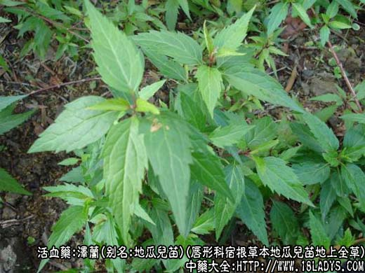
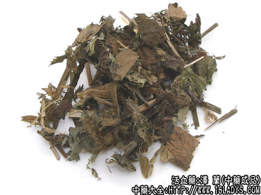

原文出处:本文转载自中药大全网。
原文连接:https://www.daquan.com/post/1994.html
原文连接:https://www.daquan.com/post/1994.html
泽兰为较常用中药。始载《神农本草经》，列中品。古代与佩兰（兰草）已有混淆，至李时珍起将二物明确分开。下面中药大全小编和大家来看看泽兰图片，了解泽兰的功效与作用。
泽兰图片



别名：地瓜儿苗。
来源：为唇形科多年生宿根草本植物地瓜儿苗及其变种毛叶地瓜儿苗的地上全草。
产地：全国大部分地区均产。
性状鉴别：茎方形，高约30～120厘米，粗5毫米左右，黄绿色或黄褐色，节明显，紫色，质脆易折断，中空。叶对生于节上，有短柄，多皱褶或破碎，完整叶片披针形或长椭圆形，先端尖，基部狭窄，边缘有粗锯齿，疏生毛茸，灰绿色，叶面有凸起小点，叶背有小凹点。轮伞花以身干，色绿，叶多者为佳。
主要成分：含挥发油、鞣质等。
药理作用：活血通经、利尿消肿。
炮制：切咀，生用。
性味：苦，微温。
归经：入脾、肝经。
泽兰的功效与作用
功能：活血通经，行水。
主治：月经不调，瘀腹痛，水肿。
临床应用：为妇科常用药。
1、治血瘀经闭、经痛、月经稀少。通经效果较好，胜于月季花、凌霄花等。药性较和缓，但仍要与补益气血之品同用，使消中有补，不伤元气，方如泽兰汤。
2、治产后浮肿，有利尿作用，可用泽兰叶配防己，等分研末，每服6～9g，温酒或醋汤调服。
3、治跌打瘀肿，能活血去瘀，内服和外用均可，常配姜皮、姜黄、银花藤等外洗，如关节热洗二方，可治关节扭伤后肿痛，对消肿填痛有一定效果。单味鲜泽兰叶捣烂外敷也有助于消肿。
用量：3～9g，最常用6g，外用适量。